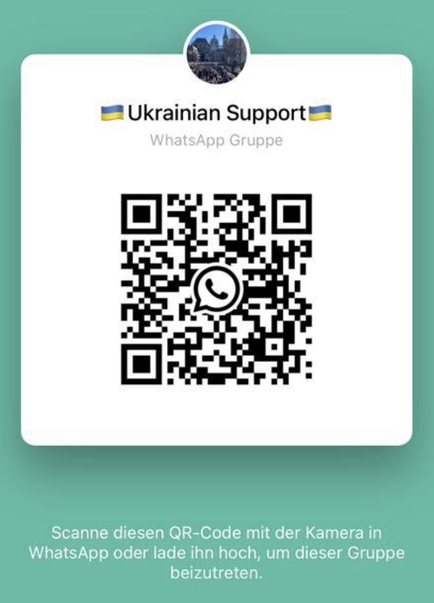

Liebe Mitbürgerinnen und Mitbürger, täglich erreichen uns Schreckensbilder aus der Ukraine. Nach dem Gefühl des Schocks und der Ohnmacht möchten wir unseren solidarischen Beitrag zur humanitären Luft in der Ukraine leisten. Die Ukrainische Gemeinde in Düsseldorf macht mobil und bittet um Sach- und Geldspenden. Ihre Sachspenden werden bis zur polnischen Grenze gebracht und von dort verteilt. Um den Transport zu erleichtern, bitten wir darum, alle Sachspenden nach KATEGORIEN sortiert in Kartons zu verpacken und den Inhalt gut sichtbar darauf zu schreiben.
Sie müssen keine Medikamente einpacken. Wir werden es noch prüfen!
(Nudeln, Reis, Konserven, Instantkaffee, Tee, Energieriegel, Trockenfrüchte, Dosensuppen usw.). Bitte keine GLASVERPACKUNGEN mitbringen, einzige Ausnahme ist Babynahrung, in diesem Fall aber eine ganze Kiste/Palette sicher verpackt.
Duschgel, Shampoo, Zahn- und Damenhygiene sowie Windeln
Wir brauchen weiterhin eure Hilfe beim Packen und Beladen von LKWs. Wenn Sie ein Logistikunternehmen kennen, das uns transportieren kann, rufen Sie bitte folgende Nummer an: +4915750080038 Die Pakete können hier abgegeben werden: Kirche Heilig Geist, Moltkestr 63A, 40477 Düsseldorf Gerne nehmen wir Ihre Spende täglich von 9.00 bis 19.00 Uhr entgegen handeln Sie transparent und vertrauensvoll. Wir danken Ihnen im Voraus für Ihre Großzügigkeit. Ukrainische Gemeinde in Düsseldorf
WhatsApp Kanal für Wohnungssuche
WhatsApp Kanal für humanitäre Hilfe
